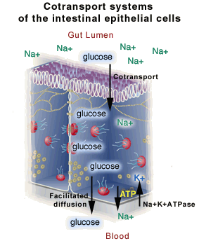

The Biology Project > Cell Biology > Cell Membranes > Problem Set
Cell Membranes Problem Set
Problem 8: Cotransport
Tutorial to help answer the question
Cotransport systems of the intestinal epithelial cells include the_________ in the intestine-facing membrane, the energy requiring _____________ facing the blood, and the ______________, allowing facilitated diffusion of glucose out of the cell.
A. permease, cotransporters, Na+K+ ATPase B. cotransporters, CFTR, permeases C. Na+K+ ATPase, cotransporters, permeases D. cotransporters, Na+K+ ATPase, permeases
Tutorial
Cotransport system| The diagram illustrates the cotransport system of our intestinal epithelial cells. | |
|
 |
| Membrane
proteins Membrane proteins must have an asynchronous distribution on the cell membrane for the system to function. This is an example of the membrane synthetic apparatus can determine where in a membrane a protein should be localized. The Na+K+ ATPase must be localized to the membrane between the cell and our blood. |
|
The Biology Project > Cell Biology > Cell Membranes > Problem Set
The
Biology Project
Department of Biochemistry and Molecular Biophysics
University of Arizona
May 2002
Revised: August 2004
Contact the Development Team
Department of Biochemistry and Molecular Biophysics
University of Arizona
May 2002
Revised: August 2004
Contact the Development Team
http://biology.arizona.edu
All contents copyright © 2002-04. All rights reserved.